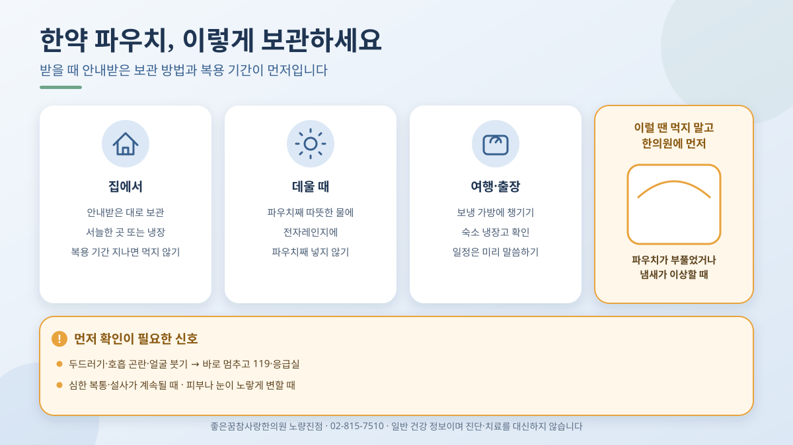

한약 파우치는 받을 때 안내받은 보관법과 복용 기간을 지키는 것이 가장 중요하며, 여행 때는 보냉 가방으로 온도를 관리하고 파우치가 부풀거나 냄새가 이상하면 먹지 말고 한의원에 문의합니다.
여쭙는 것
- 한약을 받을 때 보관 방법을 안내받으셨나요?
- 집에서는 어디에 보관하고 계신가요?
- 여행 기간은 며칠인가요?
생활에서 해 볼 것
- 안내받은 대로 서늘한 곳이나 냉장 보관하기
- 여행 때는 보냉 가방에 넣어 챙기기
- 데울 때는 파우치째 따뜻한 물에 담그기(전자레인지에 파우치째 넣지 않기)
한의원에서 함께 살필 것
- 한약을 먹는 동안 속이 불편하거나 변이 달라진 경우 복용법과 몸의 반응을 함께 살핍…
- 여행이나 출장으로 복용 일정이 흔들리는 경우 일정에 맞춰 복용 방법을 함께 정합니다.
- 한약과 다른 약을 함께 드시는 경우 복용 간격을 함께 확인합니다.
먼저 확인이 필요한 신호
- 한약 복용 뒤 두드러기, 호흡 곤란, 얼굴 붓기가 생긴 경우(바로 복용을 멈추고 진료)
- 심한 복통이나 설사가 계속되는 경우
- 피부나 눈이 노랗게 변한 경우

한약 파우치는 받을 때 안내받은 보관 방법과 복용 기간을 지키는 것이 가장 중요합니다. 여행을 가실 때는 보냉 가방으로 온도를 관리하고, 파우치가 부풀거나 냄새가 이상하면 드시지 말고 한의원에 먼저 문의해 주세요. 처방과 포장 방식에 따라 보관 방법이 다를 수 있어, 냉장고에 넣어야 하는지 여행 때 가져가도 되는지 묻는 분이 많습니다.
왜 이런 불편이 생길 수 있나요
- 파우치에 담긴 한약도 온도와 빛, 시간에 따라 상태가 달라질 수 있습니다.
- 여름철 차 안이나 햇빛이 드는 곳처럼 뜨거운 곳에 두면 변질될 수 있습니다.
- 데운 뒤 남긴 한약이나 한 번 연 파우치는 다시 보관하기 어렵습니다.
- 처방에 따라 들어간 약재와 포장이 달라, 같은 '한약'이라도 보관 안내가 다를 수 있습니다.

먼저 이렇게 여쭙니다
- 한약을 받을 때 보관 방법을 안내받으셨나요?
- 집에서는 어디에 보관하고 계신가요?
- 여행 기간은 며칠인가요?
- 파우치가 부풀거나 맛이 변한 적이 있나요?
일상에서 먼저 해 볼 수 있는 것
- 안내받은 대로 서늘한 곳이나 냉장 보관하기
- 여행 때는 보냉 가방에 넣어 챙기기
- 데울 때는 파우치째 따뜻한 물에 담그기(전자레인지에 파우치째 넣지 않기)
- 파우치가 부풀거나 냄새가 이상하면 먹지 말고 한의원에 문의하기
- 복용 기간이 지난 한약은 먹지 않기

한의원에서 함께 살필 수 있는 경우
- 한약을 먹는 동안 속이 불편하거나 변이 달라진 경우 복용법과 몸의 반응을 함께 살핍니다.
- 여행이나 출장으로 복용 일정이 흔들리는 경우 일정에 맞춰 복용 방법을 함께 정합니다.
- 한약과 다른 약을 함께 드시는 경우 복용 간격을 함께 확인합니다.
좋은꿈참사랑한의원의 한약은 진찰과 상담을 거친 뒤 처방하고, 원내에서 달이며 대표원장이 약재를 검수합니다. 한약을 드릴 때 보관 방법과 복용 기간을 함께 안내해 드리며, 여행이나 출장 일정이 있으면 미리 말씀해 주시면 일정에 맞춰 복용 방법을 정합니다. 드시는 중에 궁금한 점이 생기면 전화(02-815-7510)로 먼저 문의해 주세요.
이렇게 기록해 오시면 상담이 쉬워집니다
- 한약을 받은 날과 남은 파우치 수
- 여행·출장 날짜와 숙소의 냉장고 유무
- 복용 중 달라진 몸의 변화(소화, 대변, 잠)
- 함께 드시는 양약과 영양제

이런 증상은 먼저 확인이 필요합니다
- 한약 복용 뒤 두드러기, 호흡 곤란, 얼굴 붓기가 생긴 경우(바로 복용을 멈추고 진료)
- 심한 복통이나 설사가 계속되는 경우
- 피부나 눈이 노랗게 변한 경우
숨이 차거나 얼굴이 붓는 경우는 119나 응급실로 바로 확인하셔야 합니다. 복용 중인 양약과 영양제, 임신·수유 여부, 알레르기는 진료 전에 꼭 알려 주세요. 복용 중인 양약은 처방한 의사와 상의 없이 줄이거나 끊지 않습니다.
한눈에 보는 표
| 구분 | 핵심 |
|---|---|
| 여쭙는 것 | 한약을 받을 때 보관 방법을 안내받으셨나요? 집에서는 어디에 보관하고 계신가요? |
| 생활에서 해 볼 것 | 안내받은 대로 서늘한 곳이나 냉장 보관하기 여행 때는 보냉 가방에 넣어 챙기기 |
| 한의원에서 함께 살필 것 | 한약을 먹는 동안 속이 불편하거나 변이 달라진 경우 복용법과 몸의 반응을 함께 살핍니다. 여행이나 출장으로 복용 일정이 흔들리는 경우 일정에 맞춰 복용 방법을 함께 정합니다. |
| 먼저 확인이 필요한 신호 | 한약 복용 뒤 두드러기, 호흡 곤란, 얼굴 붓기가 생긴 경우(바로 복용을 멈추고 진료) 심한 복통이나 설사가 계속되는 경우 |
자주 묻는 질문
남은 한약을 다음에 먹어도 되나요?
보관 기간과 상태에 따라 다르니 한의원에 먼저 문의해 주세요.
해외로 가져갈 수 있나요?
나라마다 반입 규정이 달라 미리 확인하시길 권합니다.
비행기에 들고 탈 수 있나요?
기내 액체 반입 규정이 있어 항공사와 공항 안내를 먼저 확인하시고, 필요하면 수하물로 보내시는 것을 권합니다.
진료 시간은 어떻게 되나요?
좋은꿈참사랑한의원은 평일 09:30~20:00(점심 13:00~14:00), 토·일·공휴일 09:30~15:00에 진료합니다.
이 글은 일반적인 건강 정보이며 개인의 진단이나 치료를 대신하지 않습니다. 증상이 있거나 복용 중인 약이 있다면 진료를 통해 확인하세요. 치료 효과는 개인마다 다를 수 있습니다.
작성 기준: 일반적으로 알려져 있는 건강 정보를 참고해 정리했습니다(대표원장 감수). 증상 기록은 1~2주 동안 하루 1회, 비슷한 시간에 적어 오시면 지난 상태와 비교하기 쉽습니다.
좋은꿈참사랑한의원은 재진 때 지난번 이야기부터 이어서 여쭙니다. 진료시간과 예약은 오시는 길에서 확인하세요.